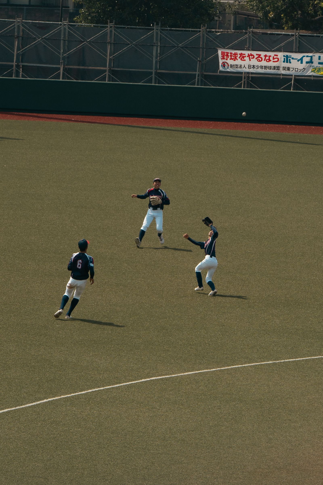

紙のスコアブックとバラバラの写真、もう卒業。ピクスコなら、試合のスコアも、選手の成績も、 あの日の写真も、チームの保護者やコーチとまとめて共有できます。

紙のスコアブックは記号を覚えるのが難しく、記録係の負担も大きい。あとから成績を集計するのも一苦労。
せっかくの好プレーの写真も、撮った保護者のスマホに眠ったまま。チームで見返せない。
「今日の試合どうだった？」を伝える手段がグループLINEの文字だけ。試合の記録として残らない。
難しい記号を覚えなくても、タップだけで試合を記録。チームの誰が見ても分かりやすく残ります。
打席結果をタップで入力するだけ。ダイヤモンド表示で走者の状況がひと目で分かります。
打撃・投球成績を自動で集計。個人成績もチーム成績も、試合後すぐに確認できます。
選手名簿や打順、守備位置、投打の左右をまとめて管理。途中交代もその場で反映。
招待リンクひとつで保護者やコーチをグループに招待。試合の記録をみんなで見守れます。
好プレーやベンチの様子を試合ごとに残せます。スコアと一緒だから、思い出がより鮮明に。
アプリのインストール不要。ブラウザからそのままアクセスして、いつでもどこでも記録・閲覧。
チーム名と選手名簿を登録。打順や守備位置もサクッと設定できます。
対戦相手を選んで試合開始。打席ごとにタップで結果を記録し、写真も添えられます。
招待リンクで保護者やコーチをグループに招待。ボックススコアと写真をみんなで振り返り。
紙のスコアブックより手軽に、正確に記録したい方。
選手の打撃・投球成績をすぐに確認して指導に活かしたい方。
試合に行けなくても、結果と写真でわが子の活躍を見届けたい方。